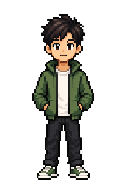

Structure
콘텐츠 구조 설계
복잡한 정책과 캠페인 정보를사용자가 읽기 쉬운 섹션과카드 흐름으로 재구성했습니다.
Portfolio Entrance
WASD 또는 방향키로 이동화면 방향키로 이동

코인으로 콘텐츠를 해금해 프로젝트 기록을 완료하세요.
증거 카드를 화면에서 확인하면 아이템이 활성화됩니다.
Pulmuone Web Project ↗
Project · Period
팀 프로젝트
2026.07.21 — 08.14
My Role
바른먹거리 하위 5개 페이지 담당
Collaboration
메인 공동 작업
Result
총 6개 페이지 ↗
Figma 시안을 토큰 기반 HTML로 구현하고, 공통 UI로 페이지 경험을 연결했습니다.
Structure
복잡한 정책과 캠페인 정보를사용자가 읽기 쉬운 섹션과카드 흐름으로 재구성했습니다.
Figma
HTML5, Tailwind CSS, Vanilla JS로시안을 반응형 화면과실제 인터랙션으로 구현했습니다.
System
메인페이지의 5개 풀페이지 섹션을dot navigation과 연결하고,공통 토큰·헤더·푸터로전체 페이지의 경험을 통일했습니다.
메인페이지를 포함해 총 6개 화면을 구현했습니다.각 카드는 실제 구현 페이지로 연결되며대표 이미지와 핵심 설계 의도를 함께 확인할 수 있습니다.

00 · Main Experience
팀원과 공동 작업한 메인 화면입니다.Eco-Caring, 환경 발자국, 지구식단, 뉴스룸, SNS를5개 풀페이지 섹션으로 구성하고스크롤·클릭·키보드 이동이 가능한dot navigation을 구현했습니다.
01 · Sustainable Diet
바른 식생활 원칙을 이야기 중심으로 전달
02 · Framework
식물성 지향과 동물복지 체계를 시각화
03 · Principle
원칙과 이력 추적 정보를 단계적으로 구성

04 · Campaign
대상별 교육 프로그램과 활동을 카드로 정리

05 · Safety
전문적인 안전관리 체계를 사용자가 이해할 수 있는 정보 위계로 정리했습니다.
145
메인페이지의 @theme 변수 132개와 바른먹거리 공통 색상 토큰 13개를 정의했습니다. 색상·간격·크기·타이포그래피·그림자·반응형 값을 이름 있는 변수로 관리합니다.
4 Step
Clarify → Reuse → Implement → Evaluate 절차와 토큰 규칙, CDN 허용 범위, 변경 범위를 하나의 하네스로 정의했습니다. 작업자가 달라도 같은 기준으로 구현하도록 만든 품질 계약입니다.
하네스 원문 확인 ↗5 Skills · 4 Roles
figma-to-code, sync-tokens, new-section, review-design 등 목적별 스킬을 만들고, 구현·토큰·섹션·리뷰 역할을 분리했습니다.
Guardrail
색상 원시값, 임의 Tailwind 클래스, 허용되지 않은 CDN이 들어오면 편집 단계에서 탐지하는 훅을 연결했습니다. 리뷰 권고가 아니라 실제로 실행되는 자동 안전장치입니다.
검사 코드 확인 ↗Reusable Component
Figma에서 다음 5개 상태를 하나의 컴포넌트로 설계했습니다.
32px 활성 슬롯, 비활성 dot, 상태별 아이콘을 variants로 정의하고 메인페이지의 현재 섹션과 실시간으로 연결했습니다.
코드에서는 동일한 DOM을 재사용하면서 aria-current와 현재 인덱스만 갱신해 활성 아이콘이 이동하도록 구현했습니다.
Plan
Eco
Footprint
News
SNS
Workflow Automation
FigJam 회의 내용을 분석해 Notion 회의록으로 자동 전환하는 업무 자동화 스킬을 설계했습니다.
팀원별 스티키 색상으로 작성자를 구분하고, 변경된 내용만 추출해 업무 유형과 진행 상태를 구조화합니다. 링크 보존, 누락 정보 검증, 오류 재시도 규칙을 적용해 반복적인 회의록 정리 과정을 자동화했습니다.
Automation Flow
FigJam 회의 보드 읽기
작성자·업무 유형·변경 내용 분류
Notion 회의록 데이터베이스 등록
실제 키윅 워크스페이스의 회의록 데이터베이스 연결과 속성 구조를 확인했습니다.
Performance
W3C, ESLint, Lighthouse로 다섯 페이지를 검사하고 대용량 이미지, 로딩 순서, 공통 헤더와 모바일 메뉴의 실제 오류를 개선했습니다.
검사기의 외부 CDN·Tailwind 오탐과 프로젝트 코드의 실제 문제를 구분한 뒤, 배포 전후 수치로 개선 효과를 확인했습니다.
약 94%
이미지 총용량 감소
약 34.8MiB → 약 2.0MiB
25 Images
PNG를 WebP로 전환
크기 명시·지연 로딩 함께 적용
27.0s → 9.8s
모바일 평균 LCP 단축
바른먹거리 하위 5개 페이지 모두 개선
72 → 95
지속가능 식생활 데스크톱 성능
Lighthouse 좋음 구간 진입
수정한 핵심 문제
측정 결과 해석
데스크톱 성능은 전 페이지가 상승했고 SEO는 모두 100점을 기록했습니다. 다만 모바일 성능은 56~66점이며, 바른먹거리 원칙 페이지의 종합 점수는 단일 측정에서 하락해 반복 측정이 필요한 결과로 남겼습니다.
막힌 지점에서 다시 설계한 과정
문제 · 초기에 구조를 충분히 이해하지 못한 채 시스템을 만들어 페이지 제작을 다시 시작해야 했습니다.
해결 · 실패 원인을 분석하고 토큰의 역할과 참조 구조를 다시 학습해 디자인 토큰, 하네스, 자동 검사까지 포함한 체계로 재구축했습니다.
문제 · 페이지마다 헤더·헤드·푸터의 구조와 동작이 달라 수정 누락과 일관성 문제가 발생했습니다.
해결 · 공통 원본과 동기화 도구를 구성해 모든 페이지에 동일한 헤더, head 설정, 푸터가 적용되도록 개선했습니다.
문제 · 프로젝트 초반에는 Codex, Claude Code, agy가 만든 결과를 목적에 맞게 제어하고 검증하는 데 어려움이 있었습니다.
해결 · 결과를 그대로 사용하지 않고 반복 검토·수정했으며, 목적별 스킬과 역할을 분리해 재현 가능한 작업 방식으로 발전시켰습니다.
완성된 첫 화면부터 직접 살펴보세요.